Senior Frontend Engineer
김희준
주문·결제, 장바구니, 웹 표준화를 제품 임팩트로 연결하는 프론트엔드 시니어
18년
웹 프론트엔드 구축과 운영 경험
30+
2021-2025 주요 프로젝트 완수
70%
레거시 전환 후 번들 크기 감소
69%
배송 경로 이상 신고 VOC 감소
Contact & Proof
blue45f@gmail.com
010-3873-4197
github.com/blue45f
develuv/study
개인 프로젝트: PromptMarket, ProtoLive, ToonSpectrum, 이력서공방
1981년 · 서울 송파구 방이동
핵심 역량
기술 전문성
• 18년 경력의 웹프론트엔드 개발 전문가로 대규모 서비스 구축 및 운영 경험
보유
• React, TypeScript, React Query + Zustand 기반 모던 프론트엔드 아키텍처 설계 및 구현
• 레거시 → React 기반 모던 스택 마이그레이션으로 JavaScript 번들 크기 70% 감소, 성능 30% 개선
• 30개 이상의 주요 프로젝트 완수 (2021-2025), 개발 생산성 30% 이상 향상 달성
• 서버리스 아키텍처(S3 + CloudFront) 도입으로 시스템 안정성 및 성능 개선
• vitest 기반 테스팅 인프라 최초 구축 및 품질 문화 정착 (Jest/Vitest/Cypress)
• React, TypeScript, React Query + Zustand 기반 모던 프론트엔드 아키텍처 설계 및 구현
• 레거시 → React 기반 모던 스택 마이그레이션으로 JavaScript 번들 크기 70% 감소, 성능 30% 개선
• 30개 이상의 주요 프로젝트 완수 (2021-2025), 개발 생산성 30% 이상 향상 달성
• 서버리스 아키텍처(S3 + CloudFront) 도입으로 시스템 안정성 및 성능 개선
• vitest 기반 테스팅 인프라 최초 구축 및 품질 문화 정착 (Jest/Vitest/Cypress)
리더십 & 조직 기여
• 전사 웹표준 개발환경 RFC 핵심 참여자 (2025.08 - 현재)
• 팀 표준 개발 환경 구축 TF장으로 스캐폴딩 및 개발 패턴 표준화 주도
• RFC 프로세스 주도 및 기술 의사결정, 코드 리뷰 문화 정착 및 프로세스 개선
• 테크 밋업 연사 (CloudFront 장애 대응 및 인프라 지식 공유)
• 다수의 신입/경력 개발자 기술 면접 참여
• 사내 디자인 시스템 TF 참여 및 기술 출판물 검수 활동
• 커머스 FE 개발자 온보딩 멘토링 및 기술 지원
• 크로스 기능팀 협업 (PM, Design, Backend, QA, Mobile)
• 팀 표준 개발 환경 구축 TF장으로 스캐폴딩 및 개발 패턴 표준화 주도
• RFC 프로세스 주도 및 기술 의사결정, 코드 리뷰 문화 정착 및 프로세스 개선
• 테크 밋업 연사 (CloudFront 장애 대응 및 인프라 지식 공유)
• 다수의 신입/경력 개발자 기술 면접 참여
• 사내 디자인 시스템 TF 참여 및 기술 출판물 검수 활동
• 커머스 FE 개발자 온보딩 멘토링 및 기술 지원
• 크로스 기능팀 협업 (PM, Design, Backend, QA, Mobile)
비즈니스 임팩트
• 대규모 커머스 앱 핵심 서비스(장바구니, 주문·결제) 개편으로 사용자 경험 개선
• 배송 경로 이상 신고 기능으로 VOC 69% 감소 (339건→105건), 고객센터 리소스 30% 절감
• 국내 최초 애플페이 결제 연동으로 결제 편의성 혁신 (2023.01 성공적 배포)
• VFD 2.0 배포 당일 장애 5시간 이내 원인 파악 및 해결
• 고객서비스 개선 프로젝트 96% TC 실행률, 90% 패스율 달성
• 스마일게이트 STOVE 플랫폼 글로벌 런칭 성공적 완수
• 커머스 서비스 옵션 안내 강화로 특화 배송 서비스 활성화 기여
• 장애 포카요케 2건 구축으로 배포 프로세스 표준화
• 배송 경로 이상 신고 기능으로 VOC 69% 감소 (339건→105건), 고객센터 리소스 30% 절감
• 국내 최초 애플페이 결제 연동으로 결제 편의성 혁신 (2023.01 성공적 배포)
• VFD 2.0 배포 당일 장애 5시간 이내 원인 파악 및 해결
• 고객서비스 개선 프로젝트 96% TC 실행률, 90% 패스율 달성
• 스마일게이트 STOVE 플랫폼 글로벌 런칭 성공적 완수
• 커머스 서비스 옵션 안내 강화로 특화 배송 서비스 활성화 기여
• 장애 포카요케 2건 구축으로 배포 프로세스 표준화
경력 사항
자비스앤빌런즈 | Tax그룹 FE 챕터 chapter lead
2025.12.08 - 2026.02.24 (약 3개월)
주요 업무
• 삼쩜삼 서비스 운영 및 웹프론트엔드 고도화
• 삼쩜삼 후결제 개편 프로젝트 참여
• 삼쩜삼 후결제 개편 프로젝트 참여
우아한형제들 | 주문웹프론트개발팀
2021.01.25 - 2025.12.05 (4년 10개월)
주요 업무
• 주문·결제 및 장바구니 서비스 핵심 아키텍처 설계 및 구현
• 대규모 커머스 앱 내 장바구니, 주문·결제, 주문내역 등 핵심 웹뷰 서비스 개발 총괄
• 레거시 아키텍처를 React 기반 모던 스택으로 전환 (Redux/Mobx → React Query)
• 전사 표준 개발 환경 정립 TF 핵심 멤버 (React Query + Zustand + TypeScript)
• vitest 기반 테스팅 인프라 최초 구축 및 품질 문화 정착
• 전사 웹표준 개발환경 RFC 핵심 참여자
• 테크 밋업 연사 및 내부 교육 세션 리더
• 커머스 FE 개발자 온보딩 및 기술 멘토링
• 대규모 커머스 앱 내 장바구니, 주문·결제, 주문내역 등 핵심 웹뷰 서비스 개발 총괄
• 레거시 아키텍처를 React 기반 모던 스택으로 전환 (Redux/Mobx → React Query)
• 전사 표준 개발 환경 정립 TF 핵심 멤버 (React Query + Zustand + TypeScript)
• vitest 기반 테스팅 인프라 최초 구축 및 품질 문화 정착
• 전사 웹표준 개발환경 RFC 핵심 참여자
• 테크 밋업 연사 및 내부 교육 세션 리더
• 커머스 FE 개발자 온보딩 및 기술 멘토링
주요 성과
아키텍처 통합: 레거시 → React 마이그레이션으로 JavaScript 번들 크기 70%
감소, 성능 30% 개선
웹 장바구니 신규 구축: S3 + CloudFront 기반 서버리스 아키텍처로 안정성
향상
성능 최적화: 평균 렌더링 시간 1초 → 700ms 개선 (30% 성능 향상)
개발 표준화: React Query + Zustand + TypeScript 코어 스택 확정 및 팀 전체
적용
테스팅 인프라: vitest 기반 테스팅 환경 최초 구축, 테스트 커버리지 0% →
16% 달성
애플페이 연동: 국내 최초 애플페이 결제 연동 성공적 오픈 (기술 검토 및
설계 주도)
VFD 2.0 즉시할인 대개편: 할인 계산 로직 서버 이관, 할인 영역 6종→4종
간소화
공동 주문 서비스: 실시간 다중 사용자 장바구니 동기화 아키텍처 설계 및
구현
배송 경로 이상 신고 기능: VOC 69% 감소 (339건→105건), 고객센터 리소스 30%
절감
장애 포카요케: 배포 모니터링 자동화 및 스테이징/운영 인프라 구조 통일
점진적 배포 환경 구축: 장바구니 개편 시 배포 리스크 최소화 및 안정성 확보
운영 안정화: 2024년 상반기 VOC 대응 및 운영 과제 50건+ 처리
기술 스택:
React, TypeScript, React Query, Zustand, MobX, Vite, Webpack, AWS S3/CloudFront,
Vitest, Jest, Cypress, GitLab CI/CD
스마일게이트스토브 | 플랫폼개발본부 프론트기술담당 웹서비스개발4팀 팀장(차장)
2016.10.25 - 2020.12.31 (4년 2개월)
주요 업무
• STOVE 게임 플랫폼(www.onstove.com) 신규 개발 및 운영 총괄
• 10명 규모 개발팀 리딩 및 프로젝트 관리
• 글로벌 서비스 런칭 및 모바일 대응
• 플랫폼개발본부 프론트기술담당 웹서비스개발4팀 팀장 역임
• 10명 규모 개발팀 리딩 및 프로젝트 관리
• 글로벌 서비스 런칭 및 모바일 대응
• 플랫폼개발본부 프론트기술담당 웹서비스개발4팀 팀장 역임
주요 성과
글로벌 플랫폼 구축: 멀티 디바이스 지원 원소스 멀티유즈 아키텍처 설계
SEO 최적화: Headless Browser 기반 Pre-rendering 시스템 구축으로 검색엔진
노출 개선
개발 생산성: Vue.js + TypeScript + RxJS 기반 프레임워크 Seed 개발 및
표준화
플랫폼 확장: TimeLine 개인화 소셜 플랫폼 및 창작 플랫폼(툰스푼, 더
뮤지션) 개발
기술 스택: Vue.js, TypeScript, RxJS, Webpack, Node.js, SEO
엔씨소프트 | 모바일퍼블리싱플랫폼실 팀원
2016.08.25 - 2016.10.24 (2개월)
주요 업무
• 블레이드앤소울 모바일 가이드앱 개발
• 웹뷰 기반 웹앱 개발
• 프레임워크 미사용, ES6 기반 자체 성능 경량화
• 웹뷰 기반 웹앱 개발
• 프레임워크 미사용, ES6 기반 자체 성능 경량화
카카오 | 메일파트 사원
2014.09.16 - 2015.11.30 (1년 3개월)
주요 업무
• 다음 메일 PC 메인 웹프론트엔드 개발자로 근무
• 모바일 웹메일, 쪽지, 캘린더 유지보수 및 개발
• 메일 보안 향상을 위한 XSS 필터 자바스크립트 독자 개발
• 화면단 및 자바 미들웨어 담당
• 모바일 웹메일, 쪽지, 캘린더 유지보수 및 개발
• 메일 보안 향상을 위한 XSS 필터 자바스크립트 독자 개발
• 화면단 및 자바 미들웨어 담당
기술 스택: JavaScript, HTML5, CSS3, Java
미래아이엔텍 | SI 사업부 대리
2012.06.21 - 2012.12.31 (약 6개월)
주요 업무
• LG CNS 금융플랫폼팀 소속으로 SmartUI(웹접근성 준수 JS UI 프레임워크) 개발 및 프로젝트
수행
• LIG 투자증권 웹접근성 개선 프로젝트 - 프레임워크 아키텍처 업무 수행
• 교보생명 차세대 프로젝트 - UI 프레임워크 지원 업무 수행
• LIG 투자증권 웹접근성 개선 프로젝트 - 프레임워크 아키텍처 업무 수행
• 교보생명 차세대 프로젝트 - UI 프레임워크 지원 업무 수행
주요 성과
• LIG 투자증권 웹접근성 인증마크 획득
• 교보생명 성공적인 오픈웹 구축
• 상용 UI 프레임워크 구축
• 교보생명 성공적인 오픈웹 구축
• 상용 UI 프레임워크 구축
주요직무: 시스템설계
솔루피아 | 계약직
2012.03.21 - 2012.06.20 (약 3개월)
주요 업무
• 한국 야쿠르트 모바일 CRM 개발
• 삼성 샘프 프레임워크 기반 하이브리드 앱 프론트 단 설계 및 구현
• 하이브리드앱 최초 NFC 결제시스템 구축
• 삼성 샘프 프레임워크 기반 하이브리드 앱 프론트 단 설계 및 구현
• 하이브리드앱 최초 NFC 결제시스템 구축
네트빌 | 사업수행실 대리
2007.01.01 - 2012.03.09 (5년 2개월)
주요 업무
• 웹, 모바일 개발 및 운영 (16건 프로젝트 수행)
주요 프로젝트
• KTB 놀이터 앱 (2012.02): KTB투자증권 안드로이드 앱 추가 기능 개발
• 삼성 CIC 교육운영 (2011.07 - 2012.01): 교육 관리자단 운영 및 솔루션화
• Netville PMS (2011.04 - 2011.06): 사내 프로젝트 매니지먼트 시스템 개발
• 숙명여대 학사 DB 개편 (2011.01 - 2011.03): DB 개편 및 추가 기능 개발
• 삼성 모바일 위젯 (2009.07 - 2010.12): 삼성 피처폰 및 바다OS 위젯 웹앱 개발, 논터치 환경 웹앱 프레임워크 개발
• 삼성 테크윈 리뉴얼 (2009.07): 대용량 파일 업로드 분석, 설계, 개발
• 삼성 르노 운영 (2009.04 - 2009.06): 마이크로 사이트 개발 및 운영
• 삼성 Solution Hub (2009.01 - 2009.04): 관리자단 기능 추가
• 산업은행 여신 지식 길라잡이 (2008.10 - 2008.12): 통합검색 솔루션 구축
• 삼성 닷컴 추가 개발 (2008.08 - 2008.09): 분석, 설계, 개발
• 유지증권 리뉴얼 (2008.07): 주요 화면단 개발
• 삼성닷컴 중국 리뉴얼 (2008.03 - 2008.06): 분석, 설계, 개발
• Samsung Telecom Europe Online Center (2008.01 - 2008.02): 대용량 첨부파일 업로드 및 게시판 템플릿
• 에듀넷 자료 나눔터 (2007.11 - 2007.12): 에디터 및 파일업로드 기능 개선
• 숙명여대 산학연 (2007.09 - 2007.10): 게시판 추가 개발
• 삼성닷컴 차세대 (2007.01 - 2007.08): 관리자단 개발
• 삼성 CIC 교육운영 (2011.07 - 2012.01): 교육 관리자단 운영 및 솔루션화
• Netville PMS (2011.04 - 2011.06): 사내 프로젝트 매니지먼트 시스템 개발
• 숙명여대 학사 DB 개편 (2011.01 - 2011.03): DB 개편 및 추가 기능 개발
• 삼성 모바일 위젯 (2009.07 - 2010.12): 삼성 피처폰 및 바다OS 위젯 웹앱 개발, 논터치 환경 웹앱 프레임워크 개발
• 삼성 테크윈 리뉴얼 (2009.07): 대용량 파일 업로드 분석, 설계, 개발
• 삼성 르노 운영 (2009.04 - 2009.06): 마이크로 사이트 개발 및 운영
• 삼성 Solution Hub (2009.01 - 2009.04): 관리자단 기능 추가
• 산업은행 여신 지식 길라잡이 (2008.10 - 2008.12): 통합검색 솔루션 구축
• 삼성 닷컴 추가 개발 (2008.08 - 2008.09): 분석, 설계, 개발
• 유지증권 리뉴얼 (2008.07): 주요 화면단 개발
• 삼성닷컴 중국 리뉴얼 (2008.03 - 2008.06): 분석, 설계, 개발
• Samsung Telecom Europe Online Center (2008.01 - 2008.02): 대용량 첨부파일 업로드 및 게시판 템플릿
• 에듀넷 자료 나눔터 (2007.11 - 2007.12): 에디터 및 파일업로드 기능 개선
• 숙명여대 산학연 (2007.09 - 2007.10): 게시판 추가 개발
• 삼성닷컴 차세대 (2007.01 - 2007.08): 관리자단 개발
학력 및 자격증
학력
• 대진대학교 공과대학 컴퓨터공학과 졸업 (1999.03 - 2007.02.23) | 컴퓨터공학/공학사 | 학점
3.4/4.5
• 서울중앙고등학교 졸업 (1996.03.02 - 1999.02.10) | 인문계
• 서울중앙고등학교 졸업 (1996.03.02 - 1999.02.10) | 인문계
병역사항
• 군필 | 육군 병장 만기전역 (2001.10.16 - 2003.12.08)
자격증
• 정보처리기사 | 취득일: 2006.08.21 | 자격번호: 06202230369Q | 발행처:
한국산업인력공단 | 등급: 기사
• SCJP (Sun Certified Programmer for the Java Platform, SE 5.0) | 취득일: 2006.09.30 | 자격번호: 24060391SCPJSE5P | 발행처: Sun Microsystems
• MOS (Microsoft Office Specialist - Microsoft PowerPoint version 2002) | 취득일: 2005.06.06 | 자격번호: BUP4-kTSk | 발행처: Microsoft
• SCJP (Sun Certified Programmer for the Java Platform, SE 5.0) | 취득일: 2006.09.30 | 자격번호: 24060391SCPJSE5P | 발행처: Sun Microsystems
• MOS (Microsoft Office Specialist - Microsoft PowerPoint version 2002) | 취득일: 2005.06.06 | 자격번호: BUP4-kTSk | 발행처: Microsoft
주요 프로젝트
장바구니 및 주문·결제 프로세스 통합 프로젝트
우아한형제들 | 2025.10 - 2026.01 | Frontend Lead
• 4단계 주문 플로우를 3단계로 단축 (장바구니와 주문·결제 프로세스 통합)
• 장바구니 기능을 컴포넌트 단위로 분리하여 주문·결제 플랫폼에 통합
• 최적 쿠폰 및 커머스 서비스 옵션 자동 선택으로 사용자 액션 최소화
• Module Federation 도입 검토 및 아키텍처 의사결정
• 주문 완료 전환율 증가, 디바이스당 매출 증가, 평균 주문 시간 및 클릭 수 감소 기대
• 장바구니 기능을 컴포넌트 단위로 분리하여 주문·결제 플랫폼에 통합
• 최적 쿠폰 및 커머스 서비스 옵션 자동 선택으로 사용자 액션 최소화
• Module Federation 도입 검토 및 아키텍처 의사결정
• 주문 완료 전환율 증가, 디바이스당 매출 증가, 평균 주문 시간 및 클릭 수 감소 기대
vitest 기반 테스팅 인프라 구축
우아한형제들 | 2025.08 | Technical Lead
• 주문·결제 웹프론트팀 최초의 체계적인 vitest 기반 테스팅 환경 구축
• 최소 20% 코드 커버리지 확보 목표, 약 16% 기준 커버리지 달성
• 테스트 코드 작성 가이드 및 베스트 프랙티스 문서화
• 팀 내 다른 도메인으로 테스팅 문화 확산
• 최소 20% 코드 커버리지 확보 목표, 약 16% 기준 커버리지 달성
• 테스트 코드 작성 가이드 및 베스트 프랙티스 문서화
• 팀 내 다른 도메인으로 테스팅 문화 확산
장애 포카요케 구축
우아한형제들 | 2025.08 | Infrastructure
• 배포 모니터링 자동화 구현, 1시간 후 자동 배포 완료 처리 로직 추가
• 스테이징/운영 인프라 구조 완전 통일 및 환경별 배포/롤백 절차 표준화
• 메인 커머스 장바구니, 주문·결제 플랫폼, 주문 내역 플랫폼에 적용
• 환경 불일치로 인한 장애 사전 방지 체계 구축
• 스테이징/운영 인프라 구조 완전 통일 및 환경별 배포/롤백 절차 표준화
• 메인 커머스 장바구니, 주문·결제 플랫폼, 주문 내역 플랫폼에 적용
• 환경 불일치로 인한 장애 사전 방지 체계 구축
VFD 2.0 즉시할인 시스템 대개편
우아한형제들 | 2025.05 - 2025.07 | Frontend Developer
• 할인 계산 로직 프론트 → 서버 이관으로 데이터 일관성 확보
• 할인 영역 6종 → 4종 간소화로 사용자 이해도 향상
• 롤링 넘버 인터랙션 개발로 UX 개선
• 배포 당일 장애 5시간 이내 원인 파악 및 해결 (2,757명 고객 보상 처리)
• 할인 영역 6종 → 4종 간소화로 사용자 이해도 향상
• 롤링 넘버 인터랙션 개발로 UX 개선
• 배포 당일 장애 5시간 이내 원인 파악 및 해결 (2,757명 고객 보상 처리)
서비스 도메인 통합 프로젝트
우아한형제들 | 2024.12 - 2025.02
• 메인 서비스와 현장 물류 서비스를 단일 FOOD 서비스 타입으로 통합
• 장바구니, 주문·결제, 주문내역, 공동 주문 서비스 온보딩, 문의하기 화면에서 서비스 타입 FOOD 구현
• 2025년 2월 17일 FD 론칭 성공
• 장바구니, 주문·결제, 주문내역, 공동 주문 서비스 온보딩, 문의하기 화면에서 서비스 타입 FOOD 구현
• 2025년 2월 17일 FD 론칭 성공
주문내역 플랫폼 프로젝트
우아한형제들 | 2024
• 초기 아키텍처 설계 및 구축 리드
• 개발 가이드 문서화 및 커머스 FE 개발자 온보딩 지원
• 비회원 주문내역 처리 및 레거시 버전 대응 설계
• 점진적 배포 전략 수립 및 구현
• 개발 가이드 문서화 및 커머스 FE 개발자 온보딩 지원
• 비회원 주문내역 처리 및 레거시 버전 대응 설계
• 점진적 배포 전략 수립 및 구현
공통 대기열 서비스 구축
우아한형제들 | 2024
• 주문·결제 공통 대기열 서비스 아키텍처 설계
• FE 지면 개발 및 사용자 경험 최적화
• 대용량 트래픽 처리를 위한 시스템 안정성 확보
• FE 지면 개발 및 사용자 경험 최적화
• 대용량 트래픽 처리를 위한 시스템 안정성 확보
배송 경로 이상 신고 기능
우아한형제들 | 2024
• 문의하기 내 프리셋 신고 기능 개발
• VOC 69% 감소 달성 (월평균 339건 → 105건)
• 고객센터 리소스 30% 절감 효과
• 상담사 업무 효율성 대폭 개선
• VOC 69% 감소 달성 (월평균 339건 → 105건)
• 고객센터 리소스 30% 절감 효과
• 상담사 업무 효율성 대폭 개선
커머스 주문 고객서비스 경험 개선
우아한형제들 | 2024.03 - 2024.06
• 문의하기 프리셋 기능, 주문 취소 요청 기능, 실험 플랫폼 연동
• 채팅 운영시간 검증 제거, 웹 로깅 구현
• 96% TC 실행률에 90% 패스율 달성
• 채팅 운영시간 검증 제거, 웹 로깅 구현
• 96% TC 실행률에 90% 패스율 달성
푸드 웹지면 개편 - 장바구니 플랫폼 마이그레이션
우아한형제들 | 2023.08 - 2024.01 | Lead Developer
• 레거시 장바구니를 표준 개발 환경으로 마이그레이션
• React Query 패턴으로 API 레이어 전환, 배송비 서비스 통합
• AWS S3 & CloudFront 인프라, Simple Deploy (서버리스 배포 도구) 서버리스 배포, GitLab CI/CD 전체 인프라 스택 신규 구축
• 인수테스트 3회 완료, 웹 접근성 대응, 2024년 1월 점진적 배포 완료
• React Query 패턴으로 API 레이어 전환, 배송비 서비스 통합
• AWS S3 & CloudFront 인프라, Simple Deploy (서버리스 배포 도구) 서버리스 배포, GitLab CI/CD 전체 인프라 스택 신규 구축
• 인수테스트 3회 완료, 웹 접근성 대응, 2024년 1월 점진적 배포 완료
표준 개발 환경 개선 TF
우아한형제들 | 2023.05 - 2023.12 | TF장 & Technical Lead
• 표준 기술 스택 정의: React Query + Zustand + React 코어 스택 확정
• 개발 환경 현대화: Node 버전 업그레이드, Vite 빌드 시스템 도입
• 테스팅 인프라: Cypress E2E, Jest/Vitest 단위 테스팅 표준 정립
• 아키텍처 레이어 설계 문서화, 보일러플레이트 리포지토리 생성
• 팀 전체의 개발 표준 정립으로 코드 품질, 개발 속도, 온보딩 효율성 대폭 향상
• 개발 환경 현대화: Node 버전 업그레이드, Vite 빌드 시스템 도입
• 테스팅 인프라: Cypress E2E, Jest/Vitest 단위 테스팅 표준 정립
• 아키텍처 레이어 설계 문서화, 보일러플레이트 리포지토리 생성
• 팀 전체의 개발 표준 정립으로 코드 품질, 개발 속도, 온보딩 효율성 대폭 향상
커머스 서비스 옵션 안내 강화 프로젝트
우아한형제들 | 2023.05 - 2023.07
• 특화 배송 서비스 활성화를 위한 Phase 1-3 단계별 커머스 서비스 옵션 안내 강화
• 긍정적 언어 채택, 커머스 서비스 옵션 설명 업데이트, 토스트 팝업 메시지 개선
• 사용자 선택률 개선으로 비즈니스 임팩트 창출
• 긍정적 언어 채택, 커머스 서비스 옵션 설명 업데이트, 토스트 팝업 메시지 개선
• 사용자 선택률 개선으로 비즈니스 임팩트 창출
장바구니 모아보기
우아한형제들 | 2023.05 - 2023.07
• 여러 음식점의 장바구니를 한 곳에서 관리하는 기능 개발
• 네이티브 헤더 및 탭 통합, JavaScript 인터페이스를 통한 동기화
• 빈 장바구니 상태 디자인 변경
• 네이티브 헤더 및 탭 통합, JavaScript 인터페이스를 통한 동기화
• 빈 장바구니 상태 디자인 변경
애플페이 결제 통합
우아한형제들 | 2022.08 - 2023.01 | Technical Lead
• 국내 최초 애플페이 결제 수단 연동 기술 검토 및 설계
• 분리된 페이지 간 안전한 토큰 전달 메커니즘 솔루션 설계
• 애플 담당자 미팅 참석 및 기술 협의, 결제 플랫폼팀 조율
• 2023년 1월 10일 성공적 배포, iOS 사용자 결제 편의성 대폭 향상
• 분리된 페이지 간 안전한 토큰 전달 메커니즘 솔루션 설계
• 애플 담당자 미팅 참석 및 기술 협의, 결제 플랫폼팀 조율
• 2023년 1월 10일 성공적 배포, iOS 사용자 결제 편의성 대폭 향상
디자인 시스템 TF
우아한형제들 | 2022.08 - 2022.12
• 재사용 가능한 UI 컴포넌트 라이브러리 개발
• Modal/Dialog, Checkbox 타입 다이얼로그 컴포넌트 구현
• Storybook을 이용한 컴포넌트 문서화 및 Figma 통합
• Modal/Dialog, Checkbox 타입 다이얼로그 컴포넌트 구현
• Storybook을 이용한 컴포넌트 문서화 및 Figma 통합
공동 주문 서비스 Phase 1
우아한형제들 | 2022.06 - 2022.10 | Technical Architect
• 실시간 다중 사용자 장바구니 동기화 아키텍처 설계 (폴링 → SSE 전환 계획)
• 주최자/참여자 닉네임 설정, 공유 장바구니, 멤버 구분 UI 구현
• 네이티브 앱과의 WebView 연동 및 앱 버전 체크 브릿지 페이지 개발
• 그룹 주문 시나리오 지원으로 신규 사용자 확보 및 주문 금액 증대 기여
• 주최자/참여자 닉네임 설정, 공유 장바구니, 멤버 구분 UI 구현
• 네이티브 앱과의 WebView 연동 및 앱 버전 체크 브릿지 페이지 개발
• 그룹 주문 시나리오 지원으로 신규 사용자 확보 및 주문 금액 증대 기여
장바구니 개편 (서버 사이드 전환)
우아한형제들 | 2021.09 - 2021.12 | Frontend Developer
• 클라이언트 → 서버 기반 장바구니 아키텍처 전환
• 멀티 디바이스 장바구니 동기화 구현
• 신규 프론트엔드 아키텍처 적용 및 인터랙션/데이터 처리 플로우 설계
• 성능 테스트 및 점진적 배포 완료
• 멀티 디바이스 장바구니 동기화 구현
• 신규 프론트엔드 아키텍처 적용 및 인터랙션/데이터 처리 플로우 설계
• 성능 테스트 및 점진적 배포 완료
웹프론트엔드 아키텍처 통합
우아한형제들 | 2021.04 - 2021.09 | Technical Lead
• 레거시 자체 프레임워크에서 React 기반 SPA로 전환
• 상태 관리 현대화: Redux/Mobx → React Query로 비동기 패턴 변경
• API, Service, Store, Component 레이어 명확히 분리
• JavaScript 번들 크기 70% 감소, 평균 성능 30% 이상 개선, 개발 생산성 30% 이상 향상
• 입사 첫해에 완수하여 향후 5년간 모든 프론트엔드 개발의 기반이 됨
• 상태 관리 현대화: Redux/Mobx → React Query로 비동기 패턴 변경
• API, Service, Store, Component 레이어 명확히 분리
• JavaScript 번들 크기 70% 감소, 평균 성능 30% 이상 개선, 개발 생산성 30% 이상 향상
• 입사 첫해에 완수하여 향후 5년간 모든 프론트엔드 개발의 기반이 됨
STOVE 글로벌 게임 플랫폼 개발
스마일게이트스토브 | 2016 - 2020
• Vue.js 기반 SPA 라이브러리 개발
• 멀티 디바이스 대응 및 SEO 최적화 (Headless Browser Pre-rendering)
• 입점사 제공 라이브러리(GNB & Footer) 개발
• TimeLine 개인화 소셜 플랫폼 및 창작 플랫폼(툰스푼, 더 뮤지션) 개발
• 멀티 디바이스 대응 및 SEO 최적화 (Headless Browser Pre-rendering)
• 입점사 제공 라이브러리(GNB & Footer) 개발
• TimeLine 개인화 소셜 플랫폼 및 창작 플랫폼(툰스푼, 더 뮤지션) 개발
SmartUI 웹접근성 프레임워크 개발
미래아이엔텍 | 2012.05 - 2014.02
• 웹접근성 준수 JavaScript UI 프레임워크 개발
• LG CNS 금융플랫폼 소속 프로젝트 지원 (교보생명, LIG 투자증권)
• LIG 투자증권 웹접근성 인증마크 획득 기여
• 교보생명 차세대 프로젝트 성공적 오픈
• n스크린 지원(PC, 모바일, 태블릿) 반응형 UI 구현
• LG CNS 금융플랫폼 소속 프로젝트 지원 (교보생명, LIG 투자증권)
• LIG 투자증권 웹접근성 인증마크 획득 기여
• 교보생명 차세대 프로젝트 성공적 오픈
• n스크린 지원(PC, 모바일, 태블릿) 반응형 UI 구현
개인 프로젝트
퇴근 후 / 주말에 직접 기획·설계·구현한 개인 프로젝트입니다. 공개 GitHub 저장소와 배포 URL
기준으로 확인 가능한 제품형 서비스와 개발 도구를 홈 스냅샷과 함께 정리했습니다.
PromptMarket · 프롬프트·스킬·에이전트 마켓플레이스
Personal Project | Public repo: blue45f/PromptMarket
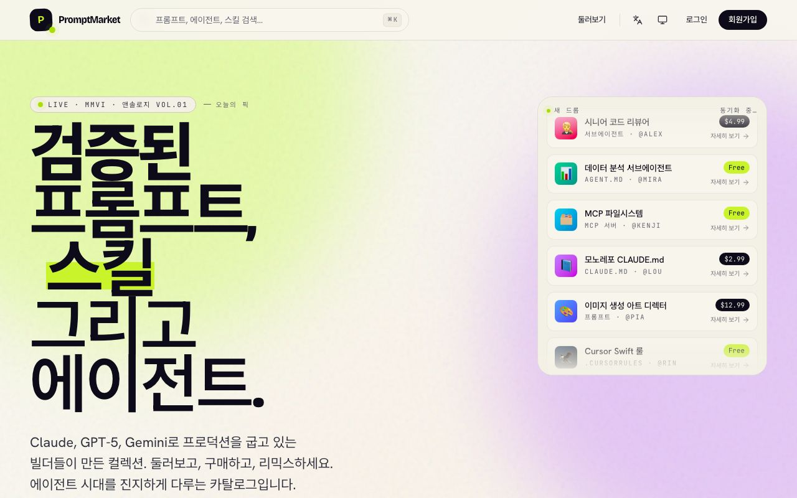
• Claude, GPT, Gemini 같은 모델을 활용하는 빌더를 위한 프롬프트, 스킬, MCP 서버,
에이전트 카탈로그입니다.
• 둘러보기, 검색, 상세, 구매/리믹스 흐름을 제품 단위로 묶고, 각 항목의 용도와 가격, 소유자를 빠르게 비교할 수 있게 설계했습니다.
• 단순 자료 목록이 아니라 검증된 작업 자산을 발견하고 재사용하는 마켓플레이스 경험을 목표로 만들었습니다.
• 둘러보기, 검색, 상세, 구매/리믹스 흐름을 제품 단위로 묶고, 각 항목의 용도와 가격, 소유자를 빠르게 비교할 수 있게 설계했습니다.
• 단순 자료 목록이 아니라 검증된 작업 자산을 발견하고 재사용하는 마켓플레이스 경험을 목표로 만들었습니다.
기술 스택:
TypeScript, React 19, Vite, NestJS 11, Vercel
ProtoLive · 바이브코딩 웹앱 공유 플랫폼
Personal Project | Public repo: blue45f/proto-live
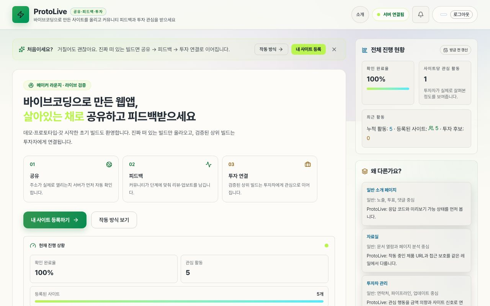
• AI로 만든 데모, 프로토타입, 초기 웹앱을 살아있는 URL 기준으로 공유하고 피드백받는
플랫폼입니다.
• 등록된 사이트가 실제로 열리는지 확인하고, 공유 → 피드백 → 관심 신호 → 투자 연결로 이어지는 흐름을 한 화면에서 추적하게 구성했습니다.
• 일반 소개 페이지보다 작동 상태와 검증 신호를 먼저 보여주는 운영형 제품 경험을 목표로 만들었습니다.
• 등록된 사이트가 실제로 열리는지 확인하고, 공유 → 피드백 → 관심 신호 → 투자 연결로 이어지는 흐름을 한 화면에서 추적하게 구성했습니다.
• 일반 소개 페이지보다 작동 상태와 검증 신호를 먼저 보여주는 운영형 제품 경험을 목표로 만들었습니다.
기술 스택: TypeScript, React, Vercel
ToonSpectrum · 웹툰·웹소설 통합 인덱스
Personal Project | Public repo: blue45f/toonspectrum
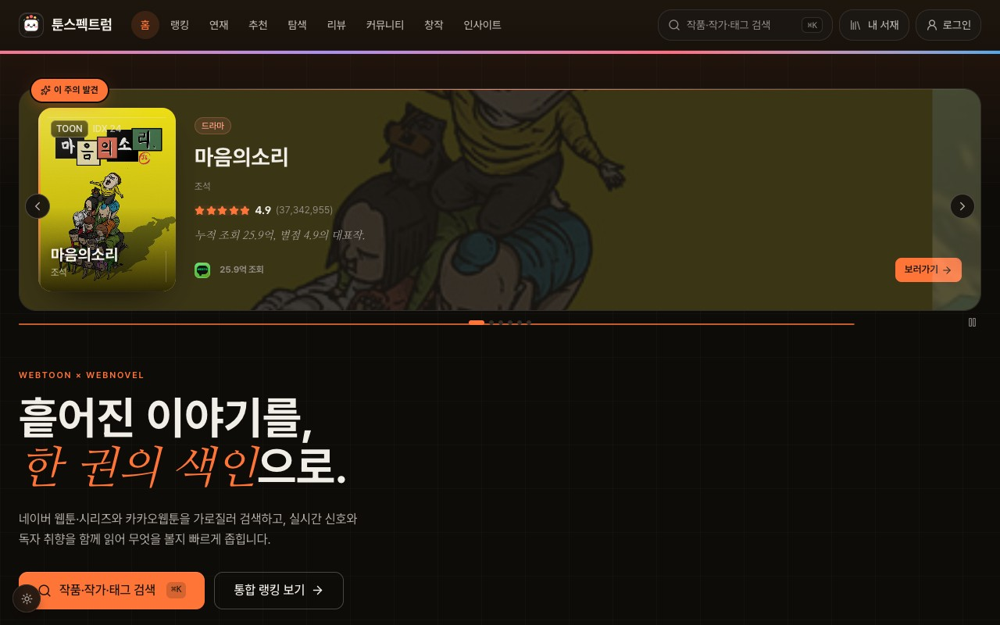
• 웹툰·웹소설 통합 검색, 랭킹, 리뷰, 커뮤니티 기능을 한 서비스에 묶은 콘텐츠 인덱스
프로젝트입니다.
• 공개 카탈로그를 기준으로 작품 탐색, 플랫폼 비교, 연재/랭킹 흐름을 한 화면에서 비교할 수 있게 정보 구조를 설계했습니다.
• 검색/필터/상세/공유 흐름을 제품 단위로 설계하며, 콘텐츠 데이터의 출처와 신뢰도 표기를 UI에서 분리하지 않는 방향으로 구현했습니다.
• 단순 포트폴리오가 아니라 수집·검색·랭킹·커뮤니티까지 포함한 풀스택 제품 형태로 확장 가능한 구조를 목표로 만들었습니다.
• 공개 카탈로그를 기준으로 작품 탐색, 플랫폼 비교, 연재/랭킹 흐름을 한 화면에서 비교할 수 있게 정보 구조를 설계했습니다.
• 검색/필터/상세/공유 흐름을 제품 단위로 설계하며, 콘텐츠 데이터의 출처와 신뢰도 표기를 UI에서 분리하지 않는 방향으로 구현했습니다.
• 단순 포트폴리오가 아니라 수집·검색·랭킹·커뮤니티까지 포함한 풀스택 제품 형태로 확장 가능한 구조를 목표로 만들었습니다.
기술 스택:
TypeScript, React 19, Vite, NestJS, Drizzle ORM, PostgreSQL(Neon), Vercel
이력서공방
Personal Project | Public repo: blue45f/resume
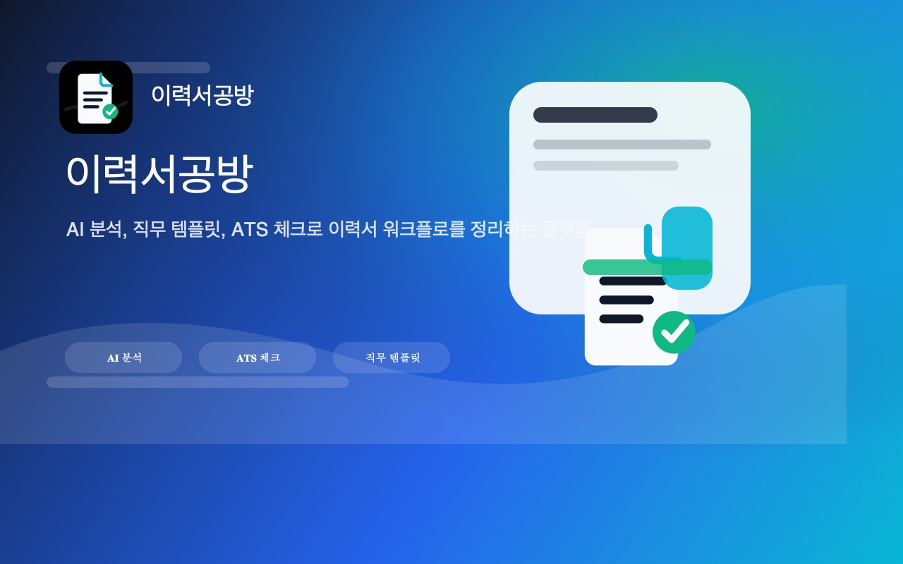
• AI 기반 이력서 관리 플랫폼으로, 이력서 작성·편집·분석·내보내기 흐름을 하나의 작업
공간으로 설계했습니다.
• 문항·템플릿 관리, 스크린샷 저장, ATS 점수 분석, 다국어 번역, PDF/JSON 내보내기 같은 채용 문서 워크플로우를 다룹니다.
• 단일 문서 편집기가 아니라 이력서 버전 관리, 후보자/포지션별 맞춤 작성, 품질 점검을 함께 처리하는 생산성 도구 관점으로 구현했습니다.
• 문항·템플릿 관리, 스크린샷 저장, ATS 점수 분석, 다국어 번역, PDF/JSON 내보내기 같은 채용 문서 워크플로우를 다룹니다.
• 단일 문서 편집기가 아니라 이력서 버전 관리, 후보자/포지션별 맞춤 작성, 품질 점검을 함께 처리하는 생산성 도구 관점으로 구현했습니다.
기술 스택: TypeScript, React, 문서 생성/분석 워크플로우
Family Care Platform
Personal Project | Public repo: blue45f/family-care-platform
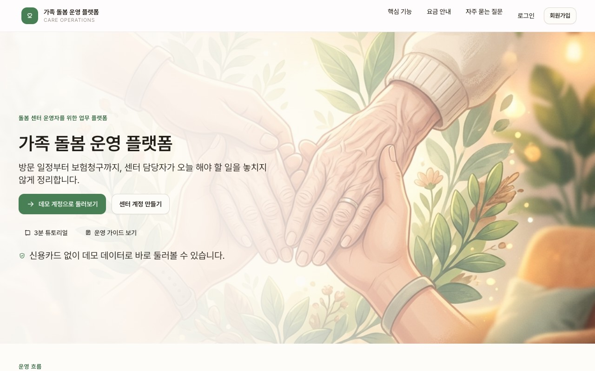
• 가족 돌봄과 케어 태스크를 제품 흐름으로 정리한 플랫폼형 프로젝트입니다.
• 일정, 상태, 역할, 알림처럼 여러 사용자가 함께 보는 정보를 한 화면에서 추적할 수 있도록 정보 구조와 인터랙션을 설계했습니다.
• 민감한 생활 데이터를 다루는 서비스라는 전제에서, 입력 흐름을 단순화하고 반복 사용 시 피로도를 낮추는 운영형 UI를 목표로 잡았습니다.
• 일정, 상태, 역할, 알림처럼 여러 사용자가 함께 보는 정보를 한 화면에서 추적할 수 있도록 정보 구조와 인터랙션을 설계했습니다.
• 민감한 생활 데이터를 다루는 서비스라는 전제에서, 입력 흐름을 단순화하고 반복 사용 시 피로도를 낮추는 운영형 UI를 목표로 잡았습니다.
기술 스택: TypeScript, React, Vercel
RotiFolk · 로테이션 파티앱
Personal Project | Public repo: blue45f/rotifolk
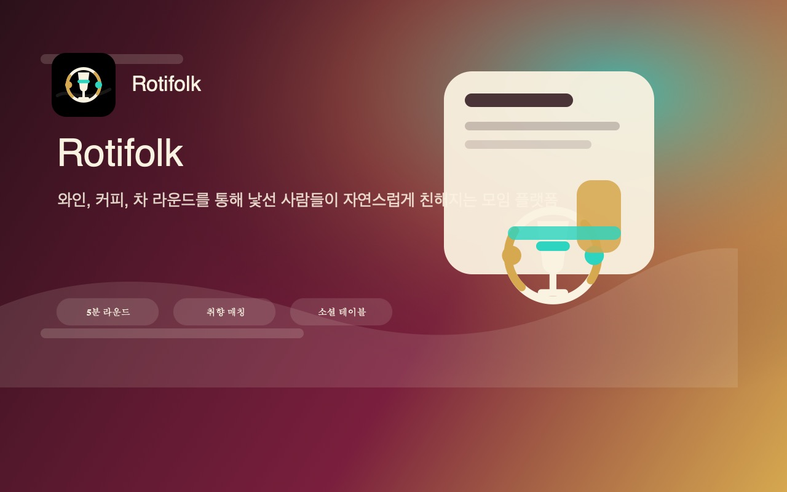
• 모임과 파티의 참여자 로테이션을 관리하는 서비스로, 작은 이벤트 운영을 앱 흐름으로
단순화한 프로젝트입니다.
• 참가자 목록, 순서, 상태 변화를 빠르게 확인할 수 있도록 모바일 우선 인터페이스와 즉시성 있는 조작 흐름을 설계했습니다.
• 짧은 사용 시간 안에 맥락을 파악해야 하는 이벤트 도구 특성에 맞춰, 화면 밀도와 터치 타깃을 우선순위로 잡았습니다.
• 참가자 목록, 순서, 상태 변화를 빠르게 확인할 수 있도록 모바일 우선 인터페이스와 즉시성 있는 조작 흐름을 설계했습니다.
• 짧은 사용 시간 안에 맥락을 파악해야 하는 이벤트 도구 특성에 맞춰, 화면 밀도와 터치 타깃을 우선순위로 잡았습니다.
기술 스택: TypeScript, React, Vercel
Pettography
Personal Project | Public repo: blue45f/pettography
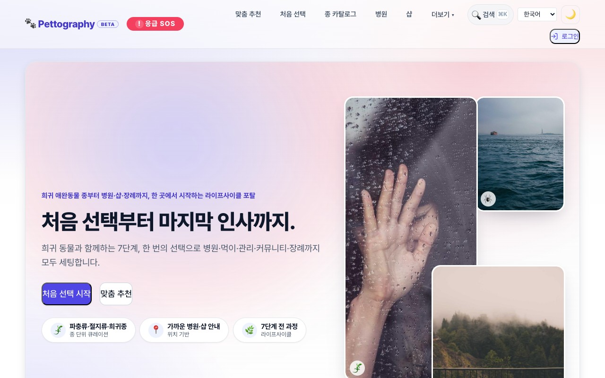
• 희귀 반려동물 종류, 병원, 먹이, 맞춤 샵을 한 곳에서 찾는 포털형 서비스입니다.
• 검색 대상이 넓고 카테고리가 많은 도메인이라, 탐색·필터·상세 정보 구조를 먼저 설계하고 그 위에 서비스 화면을 구성했습니다.
• 일반 커머스보다 정보 신뢰도가 중요한 도메인이라는 점을 고려해, 사용자가 자료를 비교하며 판단할 수 있는 구조를 목표로 했습니다.
• 검색 대상이 넓고 카테고리가 많은 도메인이라, 탐색·필터·상세 정보 구조를 먼저 설계하고 그 위에 서비스 화면을 구성했습니다.
• 일반 커머스보다 정보 신뢰도가 중요한 도메인이라는 점을 고려해, 사용자가 자료를 비교하며 판단할 수 있는 구조를 목표로 했습니다.
기술 스택: TypeScript, React, Vercel
TermsDesk
Personal Project | Public repo: blue45f/termsdesk
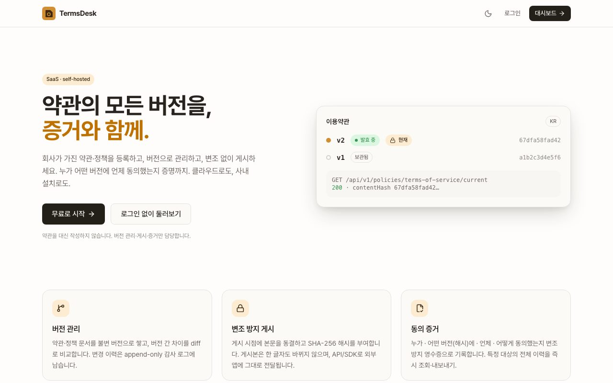
• 약관·정책 버전 관리, 변조 방지 게시, 동의 영수증을 다루는 SaaS/self-hosted 지향
프로젝트입니다.
• 정책 문서의 버전, 배포 상태, 사용자 동의 기록을 분리해 감사 가능한 흐름으로 설계했습니다.
• 법무/운영/개발이 함께 보는 관리 도구라는 전제에서, 변경 이력과 증적을 UI의 1급 정보로 다루는 구조를 만들었습니다.
• 정책 문서의 버전, 배포 상태, 사용자 동의 기록을 분리해 감사 가능한 흐름으로 설계했습니다.
• 법무/운영/개발이 함께 보는 관리 도구라는 전제에서, 변경 이력과 증적을 UI의 1급 정보로 다루는 구조를 만들었습니다.
기술 스택: TypeScript, React, SaaS workflow, audit trail
Quote Match
Personal Project | Public repo: blue45f/quote-match
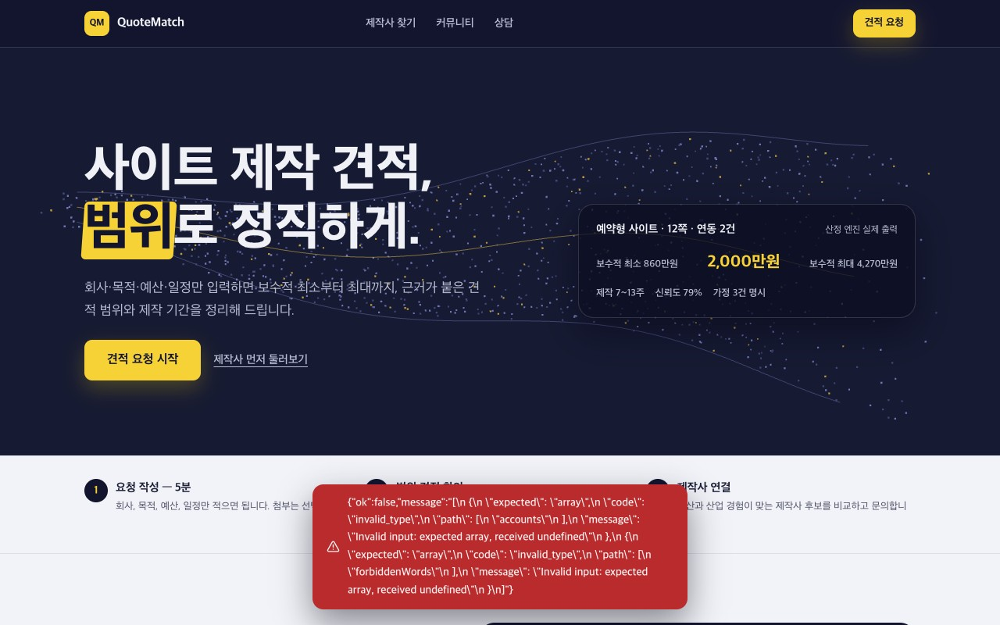
• 견적 비교와 매칭 흐름을 빠르게 검증하기 위한 제품 실험 프로젝트입니다.
• 공급자/수요자 간 조건 비교, 후보 선택, 다음 액션으로 이어지는 흐름을 중심으로 인터페이스를 구성했습니다.
• 복잡한 입력을 한 번에 요구하지 않고, 비교 가능한 단위로 쪼개는 폼/결과 UI를 실험한 프로젝트입니다.
• 공급자/수요자 간 조건 비교, 후보 선택, 다음 액션으로 이어지는 흐름을 중심으로 인터페이스를 구성했습니다.
• 복잡한 입력을 한 번에 요구하지 않고, 비교 가능한 단위로 쪼개는 폼/결과 UI를 실험한 프로젝트입니다.
기술 스택: TypeScript, React, matching workflow
Orbit UI
Personal Project | Public repo: blue45f/orbit-ui (MIT)
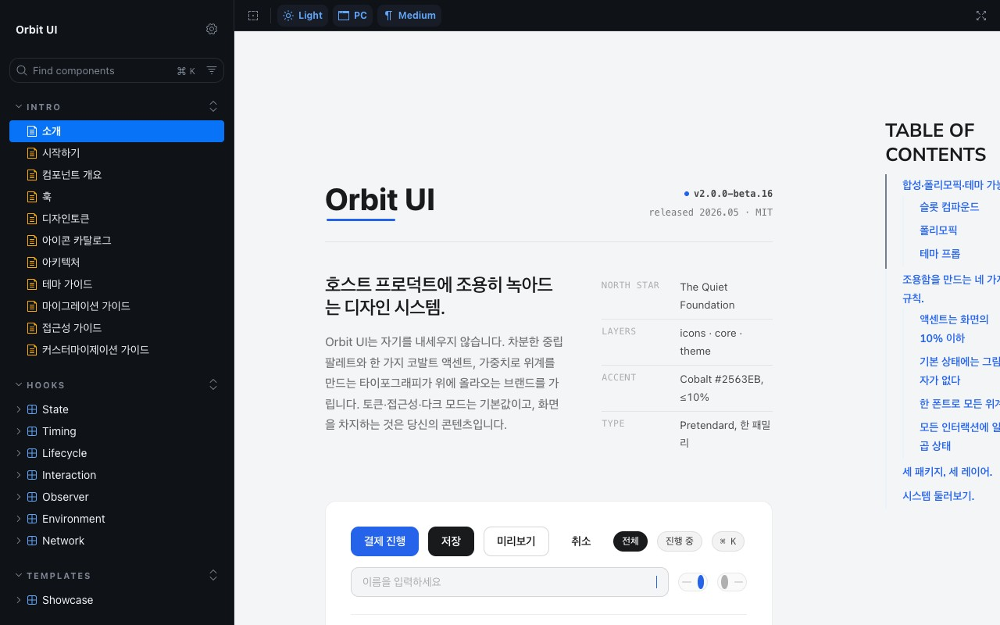
• 공개 저장소 소개 기준: React 기반 3계층 헤드리스 UI 아키텍처(Primitives/Core/Theme)로
구성된 디자인 시스템입니다.
• Storybook 공개 데모와 컴포넌트 패키지 기반 설계를 함께 제공하며, 접근성/상태 로직을 타입 안정적으로 공유합니다.
• 개인 프로젝트지만 실무 디자인 시스템처럼 토큰, 문서, 예제, 패키지 구조를 분리해 컴포넌트 API 설계 감각을 보여주는 용도로 관리합니다.
• Storybook 공개 데모와 컴포넌트 패키지 기반 설계를 함께 제공하며, 접근성/상태 로직을 타입 안정적으로 공유합니다.
• 개인 프로젝트지만 실무 디자인 시스템처럼 토큰, 문서, 예제, 패키지 구조를 분리해 컴포넌트 API 설계 감각을 보여주는 용도로 관리합니다.
기술 스택: React, TypeScript
Remote DevTools
Personal Project | Public repo: blue45f/remote-devtools (MIT)
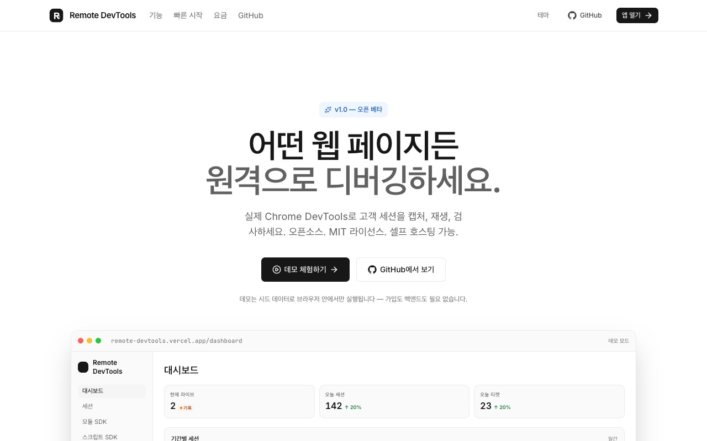
• 공개 저장소 기준으로, Vercel 데모 URL을 보유한 오픈소스 원격 디버깅 플랫폼입니다.
• NestJS + React 기반 CDP 인터페이스로, 네트워크/콘솔/DOM 모니터링과 세션 녹화·재생, 이슈 트래킹 파이프라인을 제공합니다.
• 원격 환경에서 재현이 어려운 프론트엔드 문제를 세션 단위로 기록하고 공유하는 개발자 도구 관점에서 설계했습니다.
• NestJS + React 기반 CDP 인터페이스로, 네트워크/콘솔/DOM 모니터링과 세션 녹화·재생, 이슈 트래킹 파이프라인을 제공합니다.
• 원격 환경에서 재현이 어려운 프론트엔드 문제를 세션 단위로 기록하고 공유하는 개발자 도구 관점에서 설계했습니다.
기술 스택: TypeScript, React, NestJS, CDP
SPA SEO Gateway
Personal Project | Public repo: blue45f/spa-seo-gateway
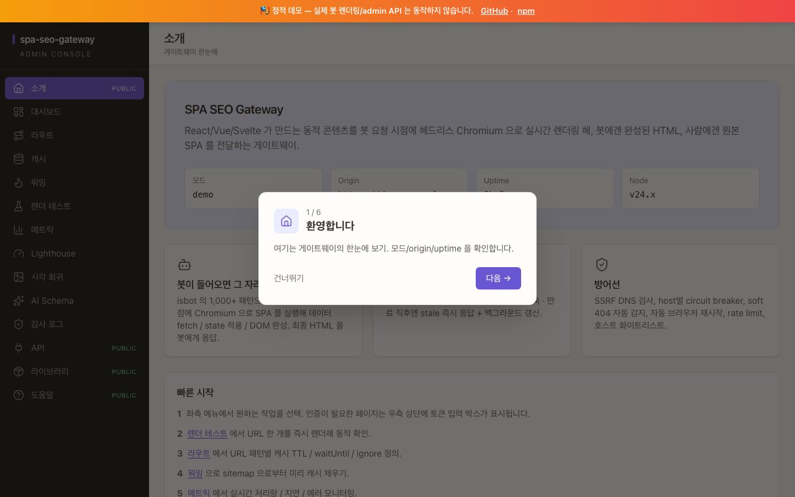
• 공개 저장소 소개 기준: SPA를 봇 트래픽용으로 동적 렌더링 처리하는 고성능 게이트웨이
프로젝트입니다.
• Vercel 데모 링크, GitHub 소스, npm 패키지를 함께 공개합니다.
• 검색엔진/크롤러 트래픽과 일반 사용자 트래픽을 분리하는 전략, 캐시, 렌더링 실패 대응을 프론트엔드 인프라 관점에서 검증했습니다.
• Vercel 데모 링크, GitHub 소스, npm 패키지를 함께 공개합니다.
• 검색엔진/크롤러 트래픽과 일반 사용자 트래픽을 분리하는 전략, 캐시, 렌더링 실패 대응을 프론트엔드 인프라 관점에서 검증했습니다.
기술 스택: TypeScript, Node.js
리더십 & 기술 공유
전사 웹표준 개발환경 RFC
• 2025.08부터 전사 웹 프론트엔드 개발 표준 정립 RFC의 핵심 참여자
• 7차 RFC 논의 참석 및 아레나 논의 준비
• 전사 표준 정립에 지속적으로 기여 중
• 7차 RFC 논의 참석 및 아레나 논의 준비
• 전사 표준 정립에 지속적으로 기여 중
테크 밋업 연사 (2025.09)
• 주제: 장바구니 CloudFront 장애 대응 및 웹 프론트엔드 개발자가 알아야 할 인프라 지식
• 내부 교육 세션 연사 초청, 장애 대응 경험과 인프라 개념 전파
• 내부 교육 세션 연사 초청, 장애 대응 경험과 인프라 개념 전파
코드 리뷰 프로세스 개선
• 코드 리뷰 회고 2회 참석 및 적극적 의견 제시
• MR 분할 지지, MR 완료 일정 및 QA 시작일을 메타데이터에 추가 제안
• 명확한 액션 아이템과 오너십을 갖춘 프로세스 개선 주도
• MR 분할 지지, MR 완료 일정 및 QA 시작일을 메타데이터에 추가 제안
• 명확한 액션 아이템과 오너십을 갖춘 프로세스 개선 주도
API 평가 및 아키텍처 리뷰
• 장바구니 빈 화면 추천 API 평가에서 상세한 기술 분석 제공
• API 구조 복잡성, 클라이언트 파싱 복잡도, 웹 성능 우려 지적
• 데이터만 전달하고 뷰 프레젠테이션은 프론트엔드가 처리하는 접근 권장
• API 구조 복잡성, 클라이언트 파싱 복잡도, 웹 성능 우려 지적
• 데이터만 전달하고 뷰 프레젠테이션은 프론트엔드가 처리하는 접근 권장
기술 문서화
• 4년간 250개 이상의 주간 상태 리포트 작성
• 프로젝트 계획, 아키텍처 의사결정 기록(ADR), 개발 가이드라인 문서화
• 일관된 문서화 습관을 통한 지식 공유와 협업 촉진
• 프로젝트 계획, 아키텍처 의사결정 기록(ADR), 개발 가이드라인 문서화
• 일관된 문서화 습관을 통한 지식 공유와 협업 촉진
성과, 숫자로
2021년부터 2025년까지 30개 이상의 주요 프로젝트를 완수했습니다. 그 과정의
숫자는 세 갈래로 정리됩니다.
아키텍처 · 성능
레거시를 React 기반 모던 스택으로 전환하며 JavaScript 번들 크기를
70% 줄이고, 평균 성능을 30% 이상 끌어올렸으며, 그 결과
팀 전체의 개발 생산성을 30% 이상 높였습니다.
품질 · 안정성
vitest 기반 테스팅 인프라를 처음 세워 커버리지를 0%에서 16%로 끌어올리고,
고객서비스 개선 프로젝트에서 96% TC 실행률과 90% 패스율을 달성했습니다.
VFD 2.0 배포 장애는 5시간 안에 원인을 파악해 해결했고, 장애 포카요케
2건으로 배포 프로세스를 표준화했습니다. 배송 경로 이상 신고 기능은 VOC를
69% 줄였습니다.
조직 · 기록
표준 개발 환경 TF를 8개월 만에 마무리하며 React Query + Zustand +
TypeScript 코어 스택을 정립했고, 4년간 250개 이상의 주간 상태 리포트를
남기며 기록의 문화를 이어왔습니다.
기술 스택
Frontend
JavaScript(ES6+)
TypeScript
HTML5
CSS3/SCSS
React
Vue.js
Angular
React Query
Zustand
MobX
Redux
RxJS
Webpack
Vite
Rollup
Vitest
Jest
React Testing Library
Cypress
Storybook
Backend & Tools
Java
Node.js
AWS S3
CloudFront
Route53
Git
GitLab CI/CD
GitHub
Jenkins
GitHub Actions
Docker
Sentry
Figma
기술 활동 및 기여
• 개인 프로젝트는 본문의 "개인 프로젝트" 섹션을 참고
(PromptMarket, ProtoLive, ToonSpectrum, 이력서공방, Family Care Platform, RotiFolk,
Pettography, TermsDesk, Quote Match, Orbit UI, Remote DevTools, SPA SEO Gateway)
• GitHub Study Group: https://github.com/develuv/study
• 사내 디자인 시스템 TF 참여
• 사내 기술 출판물 검수 활동
• FSD(Feature-Sliced Design) 아키텍처 검토 및 팀 내 공유
• 모바일 테스트 방안 연구 및 가이드 제공
• 테스트 리포팅 대시보드 구축으로 품질 관리 체계화
• 스테이지 환경 구축 주도 및 유관부서 공유
• GitHub Study Group: https://github.com/develuv/study
• 사내 디자인 시스템 TF 참여
• 사내 기술 출판물 검수 활동
• FSD(Feature-Sliced Design) 아키텍처 검토 및 팀 내 공유
• 모바일 테스트 방안 연구 및 가이드 제공
• 테스트 리포팅 대시보드 구축으로 품질 관리 체계화
• 스테이지 환경 구축 주도 및 유관부서 공유
자기소개
주문·결제 및 장바구니 서비스의 핵심 아키텍처를 설계하고 구현하는 시니어 프론트엔드
개발자입니다. 18년간 Kakao와 SmileGate Stove를 거치며 대규모 서비스의 프론트엔드 아키텍처
설계, 성능 최적화, 팀 표준화를 주도해왔습니다.
2021년 입사 이후 30개 이상의 주요 프로젝트를 완수하며 JavaScript 번들 크기 70% 감소, 평균 성능 30% 개선, 개발 생산성 30% 향상을 달성했습니다. 레거시 아키텍처를 React 기반 모던 스택으로 전환하고, 전사 표준 개발 환경을 정립하며, vitest 기반 테스팅 인프라를 구축하는 등 기술 리더십을 발휘하고 있습니다.
특히 국내 최초 애플페이 결제 연동, 공동 주문 서비스 실시간 동기화 아키텍처, 장바구니 및 주문·결제 프로세스 통합 프로젝트 리드 등 난이도 높은 기술 과제를 성공적으로 수행하며 팀의 핵심 개발자로서 기술력과 리더십을 인정받고 있습니다.
대규모 트래픽을 처리하는 서비스에서의 성능 최적화, RFC 프로세스 주도, 코드 리뷰 문화 정착, 그리고 테크 밋업 연사 활동과 주니어 개발자 멘토링을 통해 조직 전체의 기술 역량 향상에 기여하고 있습니다. 앞으로도 기술적 탁월함과 팀워크를 바탕으로 더 나은 사용자 경험을 만들어가고자 합니다.
2021년 입사 이후 30개 이상의 주요 프로젝트를 완수하며 JavaScript 번들 크기 70% 감소, 평균 성능 30% 개선, 개발 생산성 30% 향상을 달성했습니다. 레거시 아키텍처를 React 기반 모던 스택으로 전환하고, 전사 표준 개발 환경을 정립하며, vitest 기반 테스팅 인프라를 구축하는 등 기술 리더십을 발휘하고 있습니다.
특히 국내 최초 애플페이 결제 연동, 공동 주문 서비스 실시간 동기화 아키텍처, 장바구니 및 주문·결제 프로세스 통합 프로젝트 리드 등 난이도 높은 기술 과제를 성공적으로 수행하며 팀의 핵심 개발자로서 기술력과 리더십을 인정받고 있습니다.
대규모 트래픽을 처리하는 서비스에서의 성능 최적화, RFC 프로세스 주도, 코드 리뷰 문화 정착, 그리고 테크 밋업 연사 활동과 주니어 개발자 멘토링을 통해 조직 전체의 기술 역량 향상에 기여하고 있습니다. 앞으로도 기술적 탁월함과 팀워크를 바탕으로 더 나은 사용자 경험을 만들어가고자 합니다.
첨부 문서
경력증명서
자비스앤빌런즈_경력증명서.pdf
우아한형제들_경력증명서.pdf
스마일게이트_경력증명.pdf
NC_소프트_경력증명서.pdf
카카오_경력증명서.pdf
미택아이엔택_경력증명서.pdf
솔루피아_경력증명서.pdf
네트빌_경력증명서.pdf
우아한형제들_경력증명서.pdf
스마일게이트_경력증명.pdf
NC_소프트_경력증명서.pdf
카카오_경력증명서.pdf
미택아이엔택_경력증명서.pdf
솔루피아_경력증명서.pdf
네트빌_경력증명서.pdf
졸업증명서
자격증
국민연금 가입증명
개발 가이드 (실무형 최신 기준)
00_종합_가이드_목차.md
01_TypeScript_심화_가이드.md
02_React19_실무_가이드.md
03_상태관리_패턴_가이드.md
04_아키텍처_설계_패턴.md
05_API_통신_및_모킹_가이드.md
06_웹_보안_심화_가이드.md
07_테스팅_가이드.md
08_성능_최적화_가이드.md
09_장애_대응_및_관측성_표준.md
10_인프라_IaC_가이드.md
11_CICD_파이프라인_표준.md
12_CDN_캐시_전략.md
13_브라우저_호환성_가이드.md
14_배포_프로세스_체크리스트.md
15_RFC_의사결정_프로세스.md
16_AI_협업_코드리뷰_가이드.md
17_신규_입사자_온보딩_가이드.md
18_AI_개발_워크플로우_종합.md
19_웹_접근성_가이드.md
20_디자인_시스템_가이드.md
21_마이크로_프론트엔드_가이드.md
22_모노레포_운영_가이드.md
23_국제화_가이드.md
24_SEO_메타데이터_가이드.md
25_웹_애니메이션_모션_가이드.md
26_PWA_오프라인_전략_가이드.md
27_다중_개발_서버_구축_가이드.md
28_Sentry_모니터링_활용_가이드.md
01_TypeScript_심화_가이드.md
02_React19_실무_가이드.md
03_상태관리_패턴_가이드.md
04_아키텍처_설계_패턴.md
05_API_통신_및_모킹_가이드.md
06_웹_보안_심화_가이드.md
07_테스팅_가이드.md
08_성능_최적화_가이드.md
09_장애_대응_및_관측성_표준.md
10_인프라_IaC_가이드.md
11_CICD_파이프라인_표준.md
12_CDN_캐시_전략.md
13_브라우저_호환성_가이드.md
14_배포_프로세스_체크리스트.md
15_RFC_의사결정_프로세스.md
16_AI_협업_코드리뷰_가이드.md
17_신규_입사자_온보딩_가이드.md
18_AI_개발_워크플로우_종합.md
19_웹_접근성_가이드.md
20_디자인_시스템_가이드.md
21_마이크로_프론트엔드_가이드.md
22_모노레포_운영_가이드.md
23_국제화_가이드.md
24_SEO_메타데이터_가이드.md
25_웹_애니메이션_모션_가이드.md
26_PWA_오프라인_전략_가이드.md
27_다중_개발_서버_구축_가이드.md
28_Sentry_모니터링_활용_가이드.md